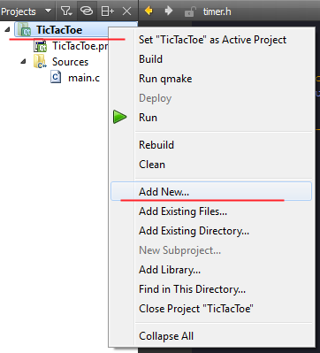
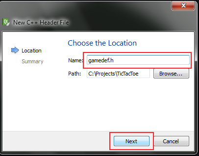
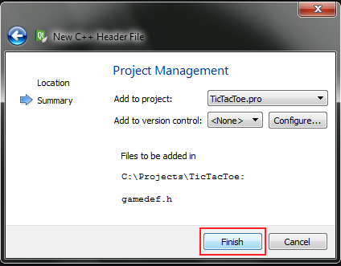

Prepare States and Constants
I've divided project for some logical pieces. There are:
- board.h : auxiliary functions to check board state
- draw.h : drawing functions
- input.h : handle input from player and computer
- ai.h : artificial intelligence for computer player
- gamecons.h : some constants are defined here
- gamedefs.h : some useful definiotions; states, player etc.
- game.h : game manager. It's core of application
- random.h : auxiliary function to random int number
- timer.h : auxiliary timer function
Our game will contains: board, states, players. At first we define some statuses and player. To define it, you must add
gamedefs.h header to the project. Right click on project name:
TicTacToe->Add new...->C++ header file->choose... and type
gamedefs.h. Click on
Next and then
Finish.



Open
gamedefs.h header in editor by double click on it. It's time to define some data. First of all, add include guard to the header (
read more).
#ifndef GAMEDEFS_H
#define GAMEDEFS_H
/* --- put code here! --- */
#endif // GAMEDEFS_H
Code above must be in the header file. It protects header for double inclusion problem (
read more). New structures and enumeration you put between #define and #endif directives.
So, let's define PlayerType enum like this:
typedef enum _PlayerType
{
PL_PLAYER1,
PL_PLAYER2,
PL_COMPUTER1,
PL_COMPUTER2
} PlayerType;
Enumeration above describe player type. It'll be: player1, player2, computer1 and computer2. Notice haven't to define value for each enum. It's not necessary. Compiler do it for you. You need this enumeration to set up application, it's describe type of player.
I used here
typedef keyword so that to avoid necesserity to use
enum keyword when variable will be declared. Read more about it
here,
here or
here. Example below shows difference.
/*example */
void foo()
{
/* instead of using this*/
enum _PlayerType player;
/* you may use that */
PlayerType player2;
}
Back to
gamedefs.h file. You have defined a PlayerType enum, so you may define Player structure to. It's look like this:
typedef struct _Player
{
PlayerType type;
int character;
} Player;
Player struct contains player type and player game character - O or X. Next define game status.
typedef enum _MenuStatus
{
MENU_PLAYER_VS_PLAYER,
MENU_PLAYER_VS_COMPUTER,
MENU_COMPUTER_VS_COMPUTER,
MENU_RUN_GAME,
MENU_IDLE,
MENU_ERROR,
MENU_QUIT
} MenuStatus;
MenuStatus enum describe the state of the main menu.
- MENU_PLAYER_VS_PLAYER : user selected Player vs Player game
- MENU_PLAYER_VS_COMPUTER : user selected Player vs Computer game
- MENU_COMPUTER_VS_COMPUTER : user selected Computer vs Computer game
- MENU_RUN_GAME : current game is running
- MENU_IDLE : it's default value when main menu is showed
- MENU_ERROR : state for signal that something bad happend in main menu. It's not supported here, so may be omitted. It's reserved for future purposes.
- MENU_QUIT : user selected quit from application
Last one will be GameStatus.
typedef enum _GameStatus
{
GS_MENU,
GS_RUN,
GS_NO_MOVES,
GS_X_WIN,
GS_O_WIN,
GS_DRAW,
GS_IDLE,
GS_END_GAME,
GS_QUIT
} GameStatus;
- GS_MENU : shows menu
- GS_RUN : the game is running
- GS_NO_MOVES : the are no more moves
- GS_X_WIN : X character wins
- GS_O_WIN : O character wins
- GS_DRAW : no more moves, no one wins, draw situation
- GS_IDLE : initial status
- GS_END_GAME : game is end
- GS_QUIT : quit from program
Now, it's time to add new header file to project. This file will contain program constants. So add
gamecons.h header file to project.
Don't forget about include guard!. In further part of this tutorial you will operate on board variable. As mentioned before game board is 3x3 matrix. You can represent it in the memory as one or two dimensional array. For simplicity it is used one dimensional int array which size is 9. Why does is int type? It's int type because, keyboard value are stored in int type - "But ASCII table has built with 255 characters. So why not use here a char type?". Of course you can use char type for board array, but after getting character from keyboard you must cast it to the char. I decided use int here. Why int is used for represent keyboard characters? Besides ASCII characters there are control characters. Notice keyboard has function keys such as F1-F12, ALT, CONTROL, ARROWS etc. It must be way to handle this, int is enough to hold information about it (int has no less than 16 bits - 2 bytes). Back to gamecons.h file, add size of board size to it. Another constant value will be COMPUTER_SPEED. It'll be needed to determine speed of computer move. Without it, user can't see how computer put character on the screen.
#ifndef GAMECONS_H
#define GAMECONS_H
#define BOARD_SIZE 9
#define COMPUTER_SPEED 0.350
#endif // GAMECONS_H
Sources for this part.